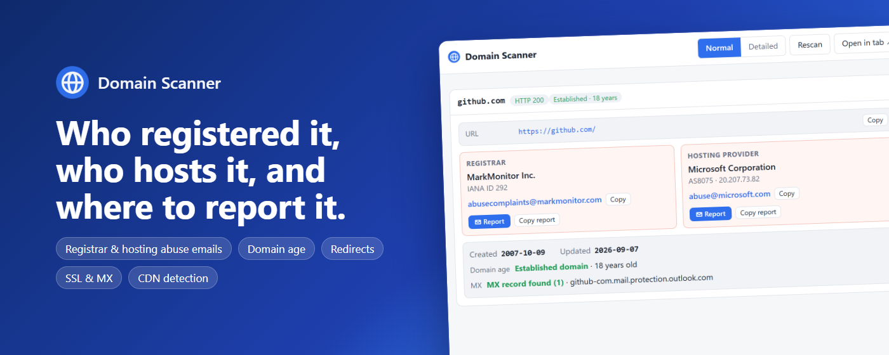

Domain Scanner
A Chrome extension that shows who registered a website, who hosts it, and where to report it, in one click.

What it shows
- Registrar and hosting provider, with their abuse email and phone
- Domain creation and update dates, with a warning for newly registered domains
- Page URL, redirects and page title
- IP address, ASN and CDN / proxy detection
- SSL certificate and MX (mail) records
- Pre-filled abuse report emails, bulk scanning and CSV / JSON export
Privacy
No account, no analytics, no tracking. Lookups go directly from your browser to public registry and DNS services.